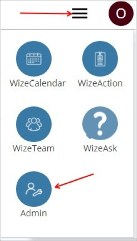
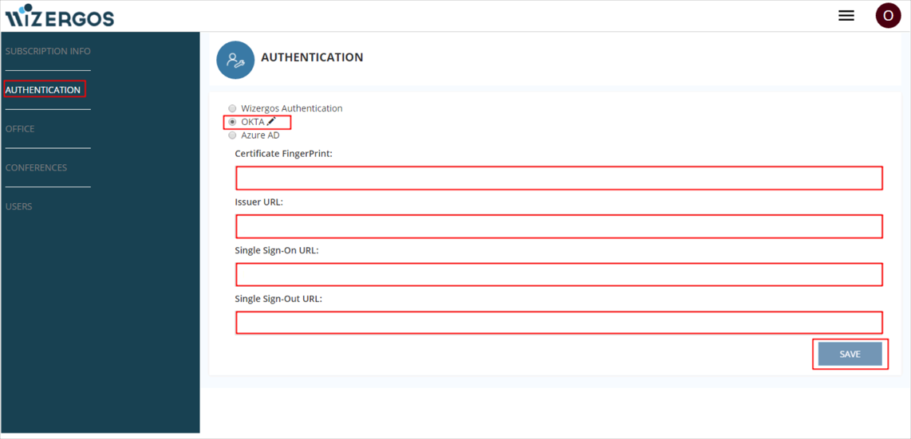
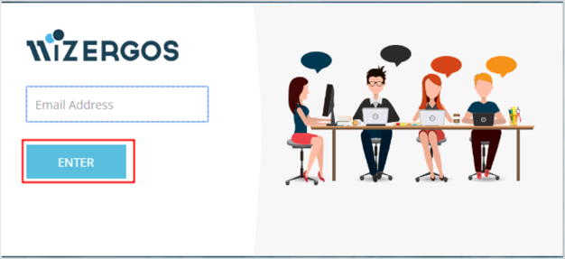

Login to your Wizergos account as an administrator.
Click the dropdown icon, then select Admin:

Click AUTHENTICATION.
Click OKTA, then enter the following (see screen shot at end of step for reference):
Certificate FingerPrint: Copy and paste the following:
Sign into the Okta Admin Dashboard to generate this variable.Issuer URL: Copy and paste the following:
Sign into the Okta Admin Dashboard to generate this variable.
Single Sign-On URL: Copy and paste the following:
Sign into the Okta Admin Dashboard to generate this variable.
Single Sign-Out URL: Copy and paste the following:
Sign into the Okta Admin Dashboard to generate this variable.
Click Save:

Notes:
IDP-initiated flows and SP-initiated flows are supported.
Just In Time (JIT) Provisioning is not supported.
Go to to https://www.wizergos.net.
Enter your Email address.
Click Enter.
